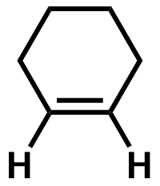
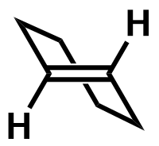

| cis-cyclohexene | trans-cyclohexene |
|---|---|
|  |  |
| As the double bond C atoms are sp² hybridised, the molecule should be planar about the C=C. This is readily achieved in cis-cyclohexene. However, in the case of trans-cyclohexene, this will require the remaining 3 CH₂–CH₂–CH₂–CH₂ bonds to be much longer (hence much weaker) than normal C–C bonds. | |